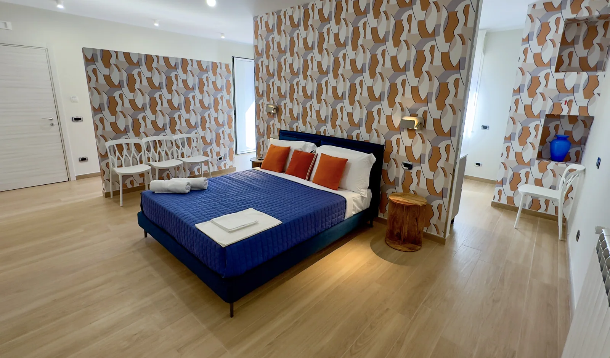
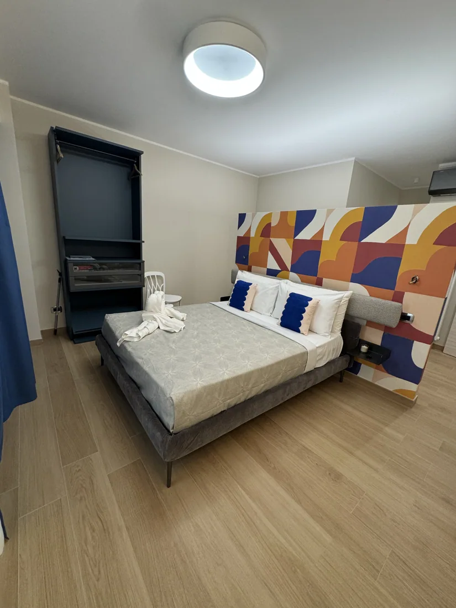
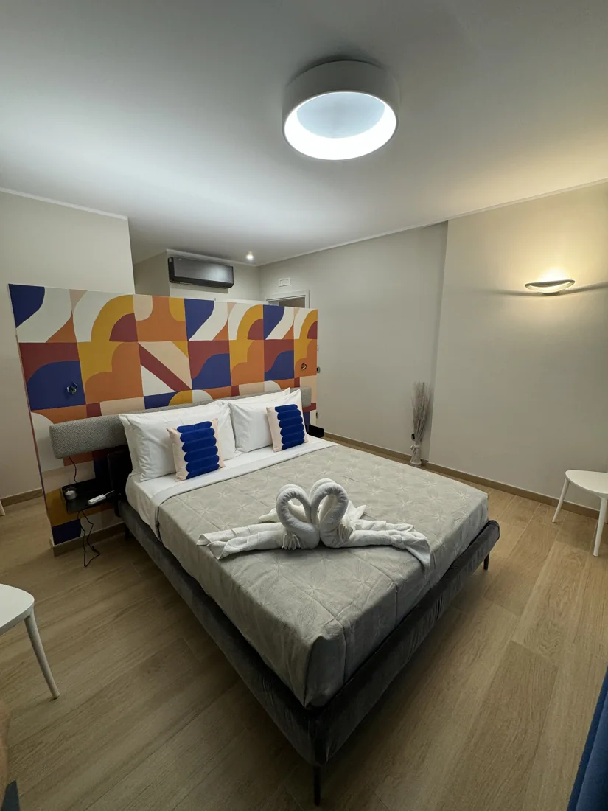

01 / 06Filicudi
Un nome che richiama il Mediterraneo, per iniziare a esplorare la struttura.
Scopri l'appartamento →Sei appartamenti e un'accoglienza dal carattere mediterraneo. Scopri gli ambienti e scegli da dove iniziare il tuo soggiorno a Taormina.
Anteprima: il modulo mostra un riepilogo, senza consultare disponibilità né inviare prenotazioni.
Sei appartamenti ispirati ai nomi delle isole, con ambienti diversi da scoprire. Un invito a vivere Taormina con la libertà di scegliere il soggiorno che fa per te.
Colori, ambienti e dettagli raccontati attraverso le fotografie.
Esplora gli interni e scegli il tuo appartamento preferito.
Lasciati ispirare dai luoghi e dalle atmosfere della città.
Una selezione di fotografie degli ambienti Tauro. Sfoglia le immagini, osserva i dettagli e lasciati ispirare dagli spazi.
Esplora gli appartamenti →Sei nomi, sei percorsi da esplorare. Apri una scheda per conoscere meglio gli ambienti e le informazioni disponibili.

01 / 06Un nome che richiama il Mediterraneo, per iniziare a esplorare la struttura.
Scopri l'appartamento → 02 / 06
02 / 06Fotografie, dettagli e una pagina dedicata per scoprire l'appartamento.
Scopri l'appartamento → 03 / 06
03 / 06Un altro ambiente da esplorare, tra fotografie e ispirazioni di viaggio.
Scopri l'appartamento →Scopri gli scatti della struttura e lasciati guidare dalla tua curiosità.
Scopri l'appartamento →
05 / 06Una delle sei unità Tauro: entra nella sua pagina per saperne di più.
Scopri l'appartamento →
06 / 06Scopri il progetto Case Vacanza Tauro e le informazioni sulla nostra struttura.
Conosci di più →Hai domande o vuoi ricevere maggiori informazioni sul tuo soggiorno?
Contattaci →Questa è un'anteprima: i dati non sono stati inviati e la disponibilità non è stata verificata.